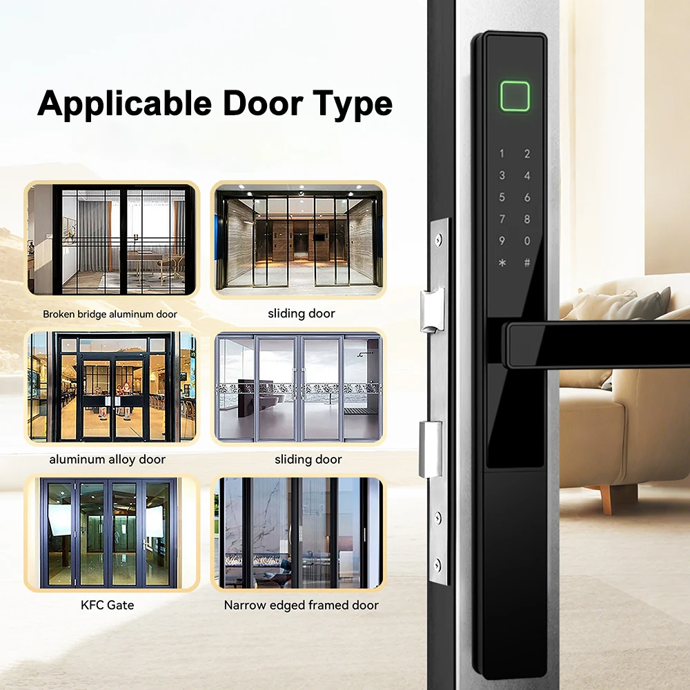
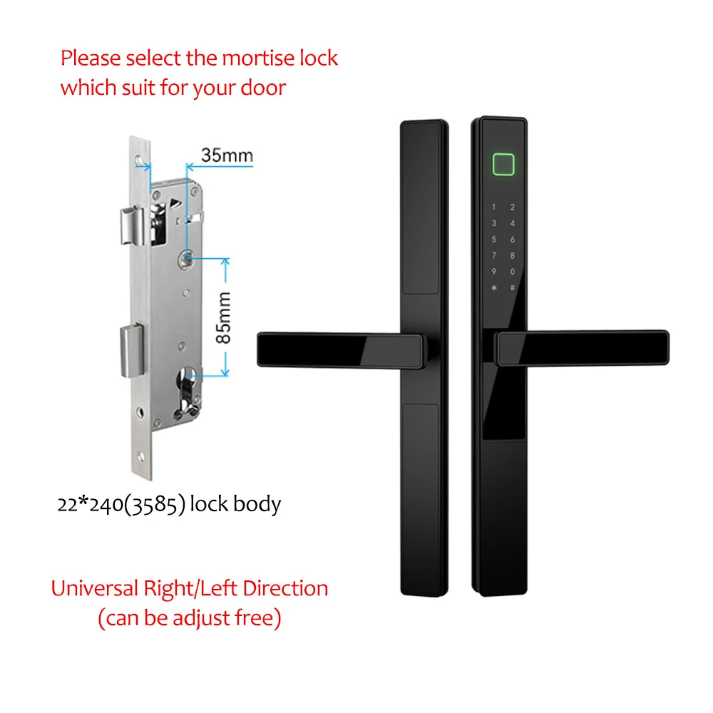
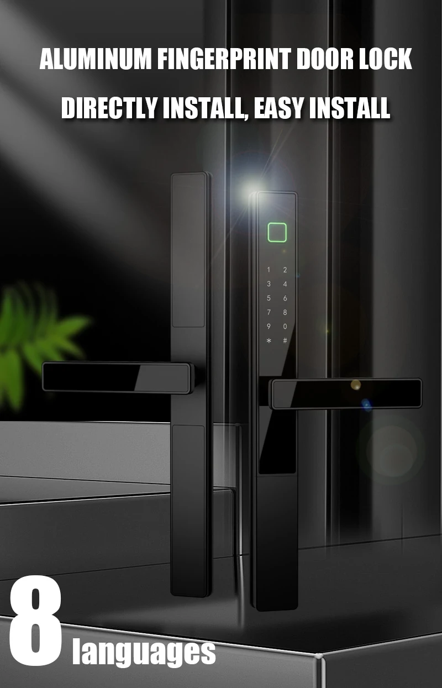
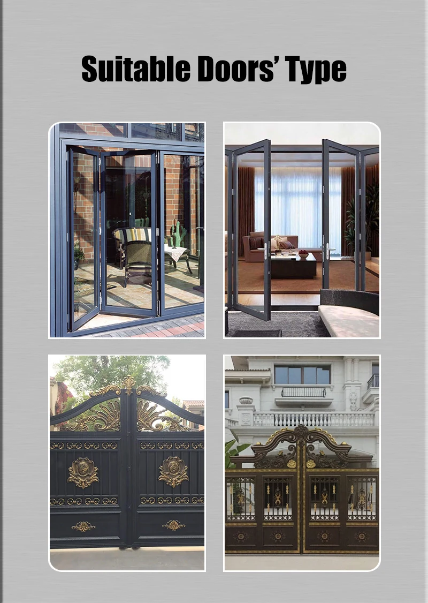
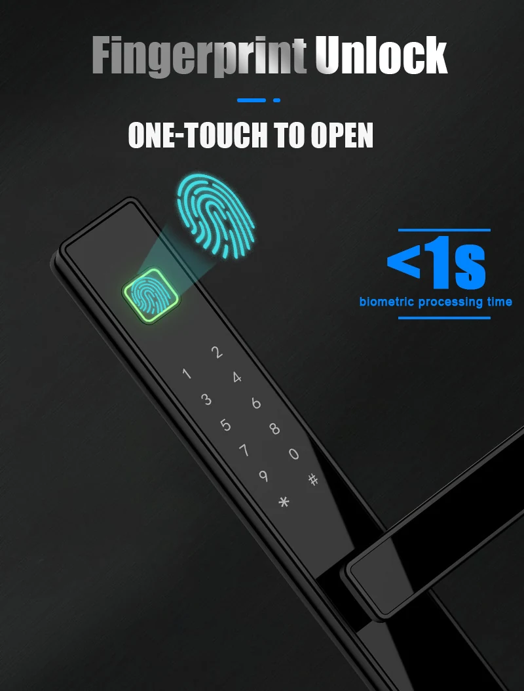
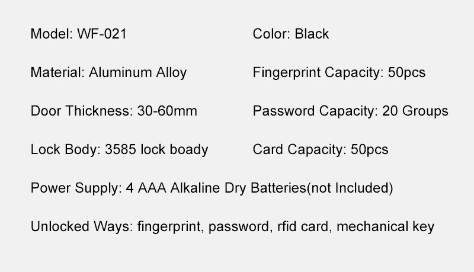
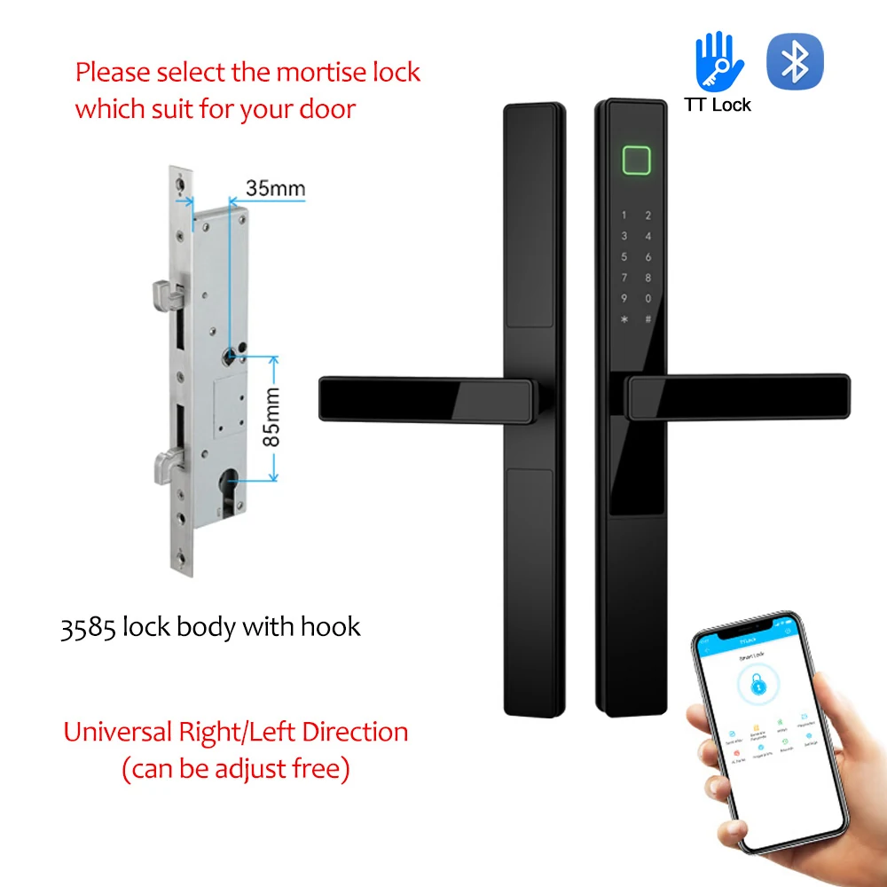

WF-023 Fechadura inteligente de alumínio com impressão digital
Painel estreito de 34 mm | Abertura 4-em-1 | Portas de 30-60 mm | Suporte OEM/ODM
- Marca / Modelo: WAFU WF-023
- Material: Liga de alumínio resistente com painel estreito de 34 mm
- Métodos de abertura: Impressão digital, palavra-passe, cartão RFID e chave mecânica
- Capacidade: Até 50 impressões digitais, 50 cartões e 20 grupos de palavras-passe
- Alimentação: 4 pilhas alcalinas AAA, não incluídas; cerca de 6 meses de utilização
- Compatibilidade da porta: Portas de 30-60 mm com corpo de fechadura 3585 compatível
- Funções opcionais: Abertura pela app TTLock e configuração de dupla impressão digital
- Aplicações: Aluminum, wood, steel and framed-door projects for homes, apartments, offices and hotels
Introdução do produto
Os perfis estreitos de portas de alumínio deixam pouco espaço para uma fechadura inteligente convencional. WF-023 usa um painel estreito de 34 mm para combinar quatro métodos de abertura num formato de fechadura com manilha adequado a casas, apartamentos, escritórios e hotéis.
Para grossistas e parceiros OEM
- Fechadura com manilha em liga de alumínio para portas de perfil estreito
- Acabamentos preto e prateado para diferentes estilos de projeto
- Configurações opcionais com app TTLock e dupla impressão digital
- Suporte OEM/ODM para marca, embalagem e requisitos do projeto
Acesso e segurança
- 4-in-1 unlocking: fingerprint, password, RFID card and mechanical key
- Stores up to 50 fingerprints, 50 cards and 20 password groups
- Optional double-fingerprint configuration for selected project requirements
- Mechanical keys provide an emergency access method
Compatibilidade com portas estreitas
- Painel estreito de 34 mm concebido para portas de alumínio e outros perfis estreitos
- Adequada para instalações compatíveis em portas de madeira, aço, inox e latão
- A especificação padrão suporta portas com 30-60 mm de espessura
- Confirme a espessura, o sentido de abertura e as dimensões da fechadura antes de encomendar
Conveniência
- Orientação por voz em oito línguas: chinês, inglês, francês, italiano, alemão, português, espanhol e russo
- Quatro pilhas AAA alimentam a fechadura durante cerca de seis meses em utilização normal
- Está disponível alimentação de emergência USB de 5 V quando as pilhas estão fracas
Produtos e guias relacionados
- Compare comWF-016 Handle Lock for retrofit handle-lock projects
- ConsulteWF-V2 aluminum panel smart lock for face-plate applications
- Consultesmart lock OEM/ODM partner guidance
- Exploreapartment, office and hotel applications
WF-023 Especificações técnicas detalhadas
| Atributo | Especificação |
|---|---|
| Número do modelo | WF-023 |
| Nome da marca | WAFU |
| Material | Liga de alumínio |
| Color | Preto / Prateado |
| Largura do painel | Painel estreito de 34 mm |
| Dimensões do produto | 330 x 34 mm |
| Tipo de porta | Aluminum, wood, steel, stainless steel and brass doors; confirm project fit before ordering |
| Espessura da porta | 30-60 mm |
| Corpo da fechadura | 3585 mortise; 22 x 240 mm body, 35 mm backset reference |
| Métodos de abertura | Impressão digital, palavra-passe, cartão RFID e chave mecânica |
| Fingerprint Capacidade | Up to 50 fingerprints |
| Password Capacidade | Up to 20 password groups |
| Card Capacidade | Up to 50 cards |
| Funções opcionais | TT Lock App unlock; double-fingerprint configuration |
| Idiomas de voz | Chinese, English, French, Italian, German, Portuguese, Spanish and Russian |
| Alimentação Supply | 4 x AAA alkaline batteries, not included |
| Duração da bateria | Approximately 6 months, depending on usage |
| Emergency Alimentação | 5V USB |
| Temperatura de funcionamento | -10 to 50 C |
| Humidade de funcionamento | Below 95% RH |
| Dimensões da embalagem | Approx. 37.3 x 17 x 5.2 cm |
| Peso da embalagem | Approx. 1.6 kg |
| Quantidade por caixa | 20 pcs per carton |
| Lista de embalagem | Front panel, rear panel, lock body, 2 cards, 2 keys, user manual and screws bag |
Detalhes do produto









Outros mais vendidos

Contacte-nos
Para branding OEM, personalização funcional ODM, aquisição de direitos ou soluções específicas de projeto, a nossa equipa contactará you no prazo de um dia útil após o envio e apresentará uma solução de fechadura inteligente à medida. smart lock solution.
Morada
2F, Bldg 6, Sha-Yi Eco-Industrial Park, 496 Chuangcheng Rd,
Shajing Sub-district, Bao'an District, Shenzhen, China
Telefone
+86 15914193183 (same number for WhatsApp)
wafutechnology@outlook.com
wafutechnology@gmail.com